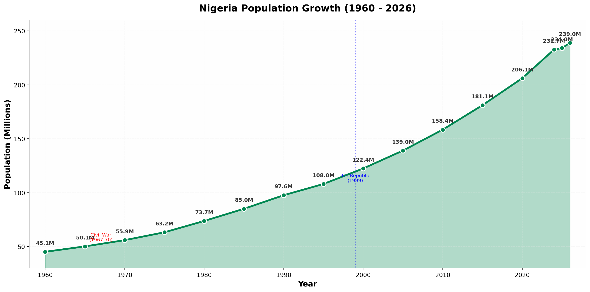
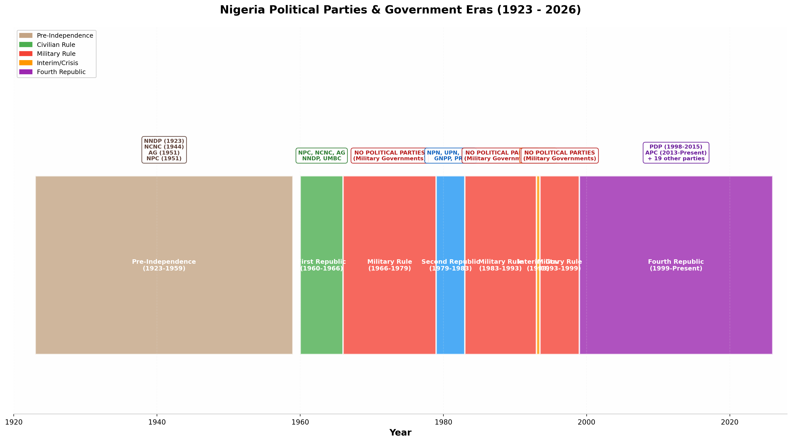
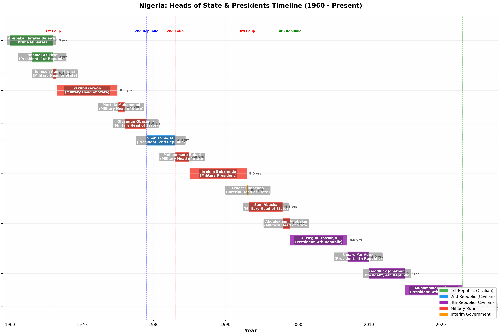
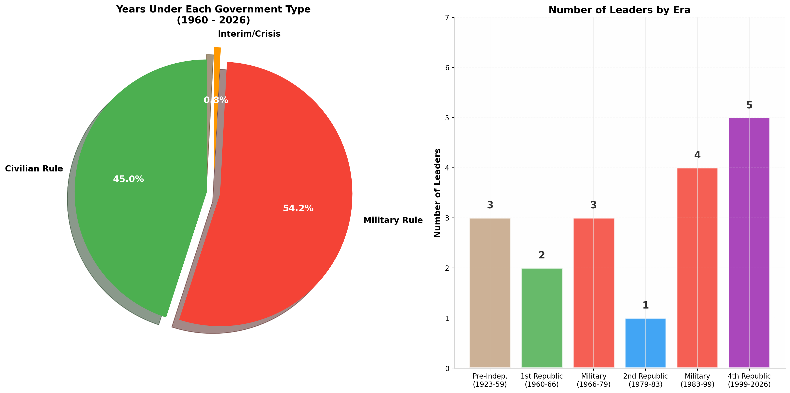
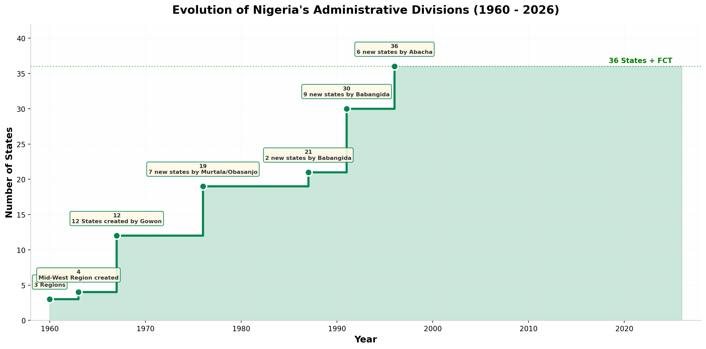

A comprehensive interactive guide to Nigeria's political evolution, population growth, and leadership from independence to the present day.
Nigeria, the "Giant of Africa," gained independence from Britain on October 1, 1960. Since then, it has navigated through civilian republics, military dictatorships, a devastating civil war, and the longest period of uninterrupted democracy in its history.
With a population projected to reach 239 million by 2026, Nigeria remains Africa's most populous nation and one of its most politically dynamic countries.


| Era | Period | Dominant Parties | Notes |
|---|---|---|---|
| Pre-Independence | 1923–1959 | NNDP, NCNC, AG, NPC | First parties founded by nationalists like Herbert Macaulay |
| First Republic | 1960–1966 | NPC, NCNC, AG | Regional parties representing North, East, and West |
| Military Rule | 1966–1979 | Banned | No political activity allowed |
| Second Republic | 1979–1983 | NPN, UPN, NPP, GNPP, PRP | Five-party system created by FEDECO |
| Military Rule | 1983–1993 | Banned | Parties proscribed by military decrees |
| Interim | 1993 | SDP, NRC | Elections annulled by Babangida |
| Military Rule | 1993–1999 | Banned | Abacha and Abubakar regimes |
| Fourth Republic | 1999–Present | PDP, APC (+19 others) | APC ended PDP's 16-year dominance in 2015 |

| # | Name | Title | Period | Duration | Type |
|---|---|---|---|---|---|
| 1 | Abubakar Tafawa Balewa | Prime Minister | Oct 1960 – Jan 1966 | 5.3 yrs | Civilian |
| 2 | Nnamdi Azikiwe | President (1st Republic) | Oct 1963 – Jan 1966 | 2.3 yrs | Civilian |
| 3 | Johnson Aguiyi-Ironsi | Military Head of State | Jan 1966 – Jul 1966 | 0.5 yrs | Military |
| 4 | Yakubu Gowon | Military Head of State | Aug 1966 – Jul 1975 | 8.9 yrs | Military |
| 5 | Murtala Muhammed | Military Head of State | Jul 1975 – Feb 1976 | 0.6 yrs | Military |
| 6 | Olusegun Obasanjo | Military Head of State | Feb 1976 – Oct 1979 | 3.6 yrs | Military |
| 7 | Shehu Shagari | President (2nd Republic) | Oct 1979 – Dec 1983 | 4.2 yrs | Civilian |
| 8 | Muhammadu Buhari | Military Head of State | Dec 1983 – Aug 1985 | 1.6 yrs | Military |
| 9 | Ibrahim Babangida | Military President | Aug 1985 – Aug 1993 | 8.0 yrs | Military |
| 10 | Ernest Shonekan | Interim Head of State | Aug 1993 – Nov 1993 | 0.2 yrs | Interim |
| 11 | Sani Abacha | Military Head of State | Nov 1993 – Jun 1998 | 4.6 yrs | Military |
| 12 | Abdulsalami Abubakar | Military Head of State | Jun 1998 – May 1999 | 0.9 yrs | Military |
| 13 | Olusegun Obasanjo | President (4th Republic) | May 1999 – May 2007 | 8.0 yrs | Civilian |
| 14 | Umaru Yar'Adua | President (4th Republic) | May 2007 – May 2010 | 2.9 yrs | Civilian |
| 15 | Goodluck Jonathan | President (4th Republic) | May 2010 – May 2015 | 5.0 yrs | Civilian |
| 16 | Muhammadu Buhari | President (4th Republic) | May 2015 – May 2023 | 8.0 yrs | Civilian |
| 17 | Bola Tinubu | President (4th Republic) | May 2023 – Present | 3+ yrs | Civilian |


| Year | Number | Event | Leader |
|---|---|---|---|
| 1960 | 3 | Three Regions (North, West, East) | Colonial Structure |
| 1963 | 4 | Midwest Region created | Balewa / Azikiwe |
| 1967 | 12 | 12-State structure | Yakubu Gowon |
| 1976 | 19 | 7 new states created | Murtala / Obasanjo |
| 1987 | 21 | 2 new states created | Ibrahim Babangida |
| 1991 | 30 | 9 new states created | Ibrahim Babangida |
| 1996 | 36 | 6 new states created | Sani Abacha |
Nigeria became a republic with Nnamdi Azikiwe as ceremonial President and Abubakar Tafawa Balewa as Prime Minister. The government was dominated by the NPC-NCNC coalition. It ended violently with the January 15, 1966 coup led by Major Kaduna Nzeogwu.
Aguiyi-Ironsi (1966): Assassinated after 6 months.
Gowon (1966–1975): Longest-serving leader; led through the Biafran Civil War (1967–1970); created 12 states.
Murtala (1975–1976): Assassinated; created 7 new states.
Obasanjo (1976–1979): Handed power to civilians—rare move for a military leader.
Shehu Shagari of the National Party of Nigeria (NPN) won the 1979 elections. His government was marred by electoral fraud allegations and economic decline. Overthrown on December 31, 1983 by Major-General Muhammadu Buhari.
Buhari (1983–1985): "War Against Indiscipline."
Babangida (1985–1993): Longest military rule; annulled the June 12, 1993 election.
Shonekan (1993): Interim government, 3 months.
Abacha (1993–1998): Most repressive regime; died mysteriously.
Abubakar (1998–1999): Organized rapid transition to democracy.
The longest period of uninterrupted democracy:
Obasanjo (1999–2007): PDP; economic reforms; debt relief.
Yar'Adua (2007–2010): PDP; died in office.
Jonathan (2010–2015): PDP; conceded 2015 election—historic peaceful transfer.
Buhari (2015–2023): APC; anti-corruption war.
Tinubu (2023–Present): APC; current president.